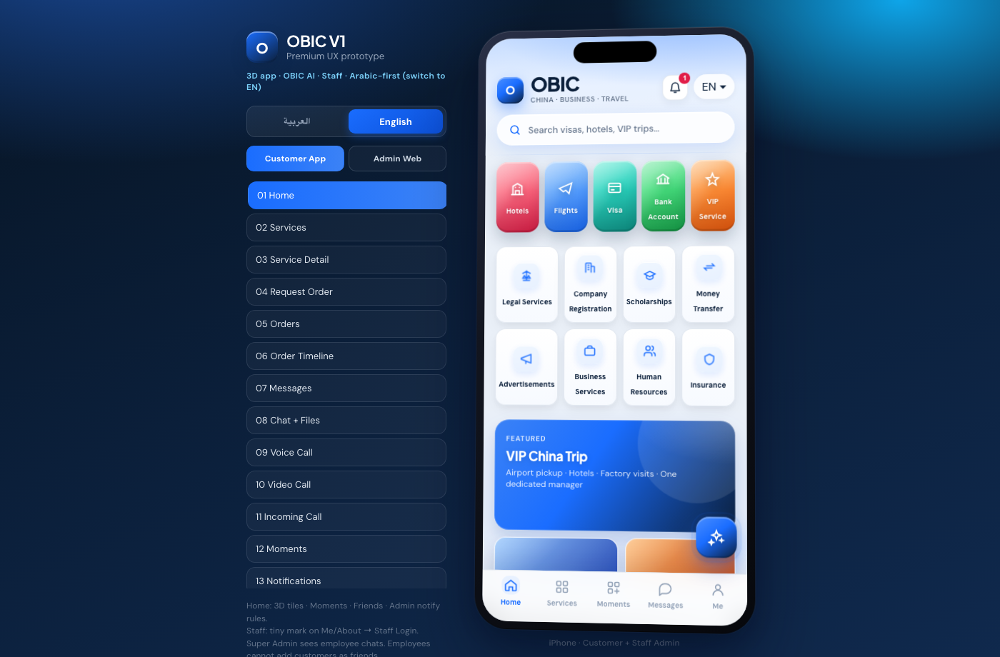
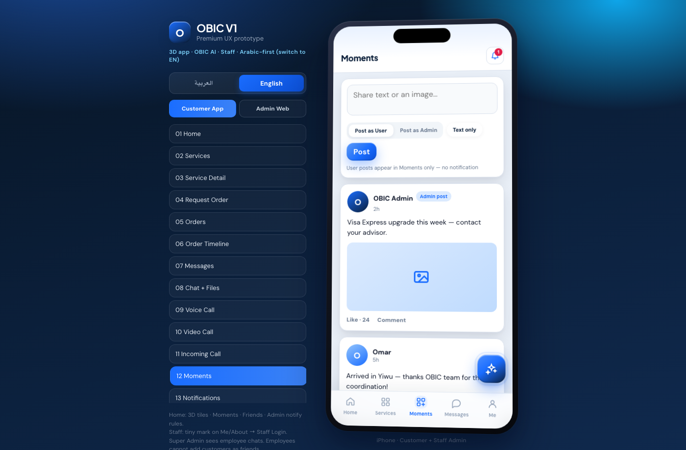
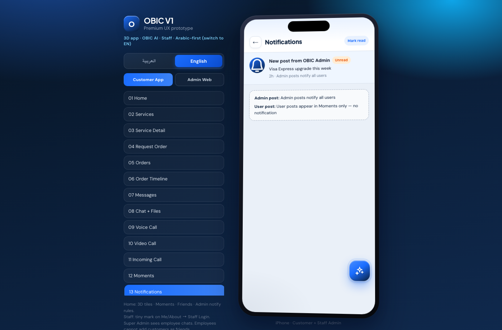
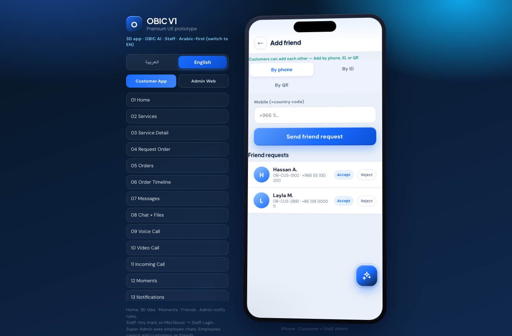
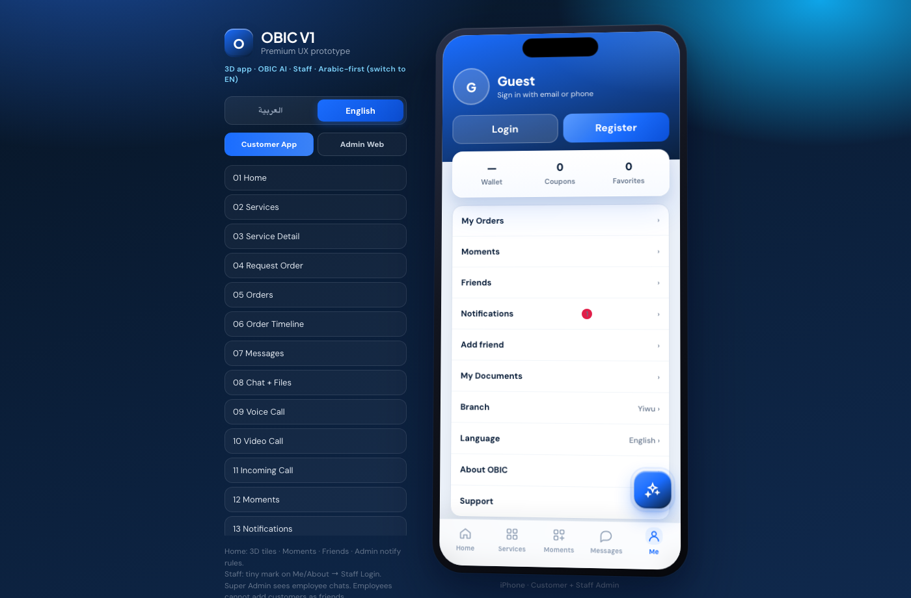

Interactive App Prototype — Function Guide V1 · Arabic is the default language (switch to English anytime)
Designed & developed by Ali
Confidential · Internal use · www.obicgp.com · 2026-08-05
CONFIDENTIAL
1. Introduction
This guide explains every function in the OBIC interactive prototype for customers and staff. Default UI language is Arabic with full RTL; users can switch to English.
Confidentiality: Do not commit Desktop deal/PRD/staff secret docs into the repository. This guide and prototype are for internal stakeholder review.
Designed & developed by Ali
2. Language switch
Use the side panel or Home / Me to switch Arabic ↔ English. Arabic enables full right-to-left layout.

Home screen in English
3. Home (Ctrip-like density)
3D service tiles, search, floating promos, banners, and OBIC AI fab. Bottom tabs: Home · Services · Moments · Messages · Me.
Default Arabic Home (RTL)
4. Services & Orders
Service detail → request form → orders list and status timeline.
Orders list with statuses
5. Messages & Chat (files / voice / video)
Messages · AI · Friends entryChat with photo/file tools and call entryVoice call glass UI
6. Moments (朋友圈-style feed)
Notification rules:
• When Admin posts → all users get a notification (badge + list entry).
• When a User posts → appears in Moments feed only; nobody is notified.

Moments — post as User or Admin

Notifications — admin posts only
7. Add friends (customers)
Customers can add each other by phone, ID, or QR, with friend requests.

Add friend by phone / ID / QR
8. Login & Register (Email | Phone)
Login — Email or Phone tabsRegister — Email or Phone with verification code
9. Me · About · Staff entry
Tiny O Staff mark on Me / About opens Staff Login (not a customer CTA).

Me — language, friends, Moments + Designed by AliAbout OBIC — branches, website, Ali creditStaff Login — Super Admin / Employee role demo